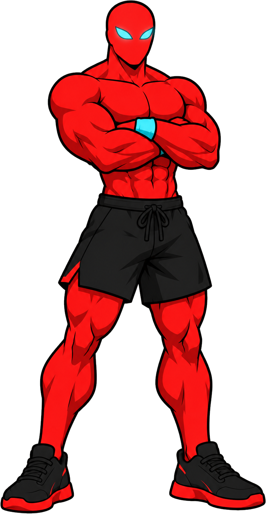
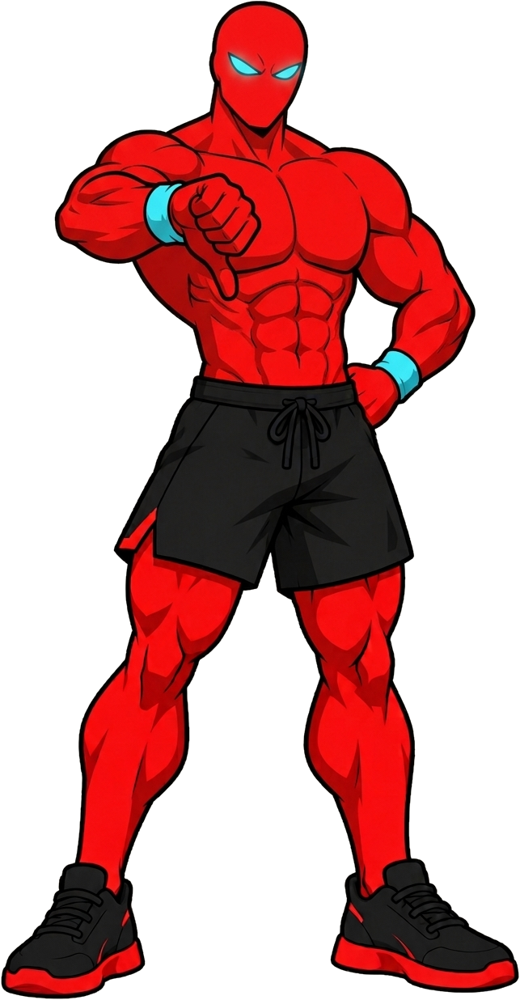
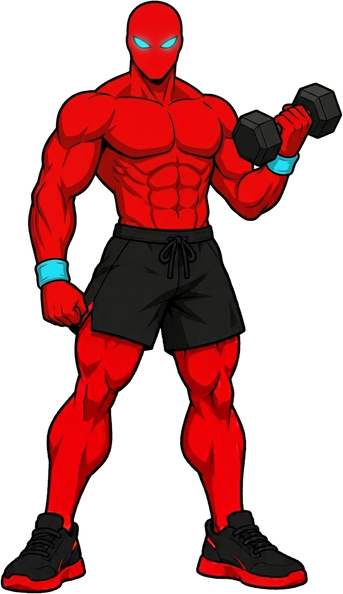
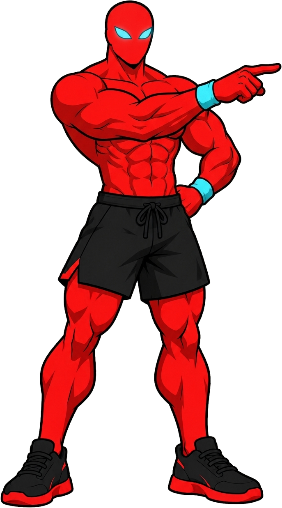
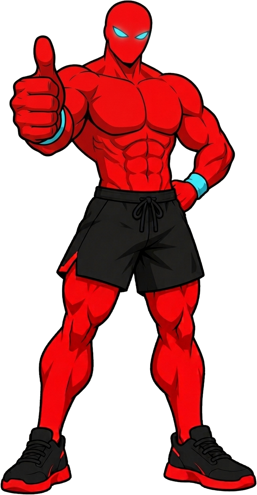
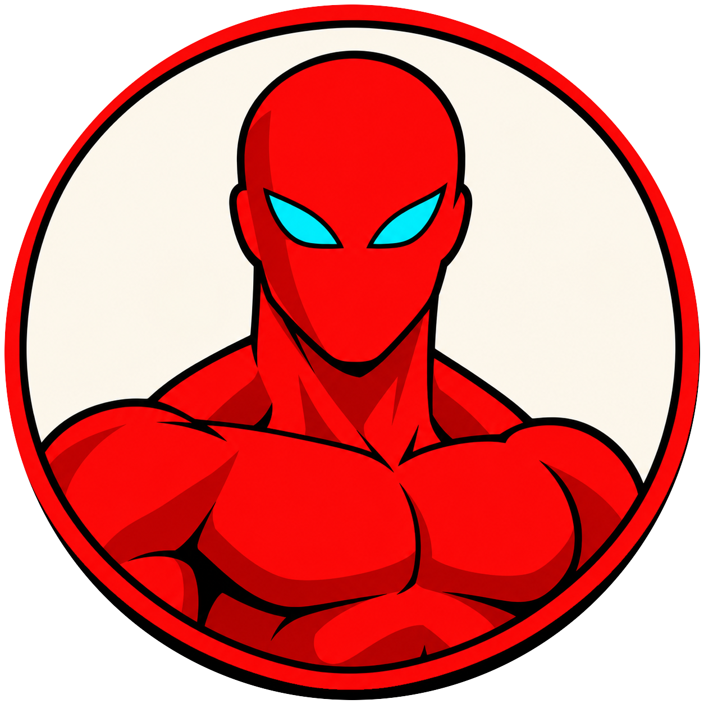

Light
weights
build
muscle
too

THE MYTH
“Go heavy or go home.”
“Light weights just tone.”
Heavy is the
only way?

THE RESEARCH
≤
60
%
of your max still
built muscle
Schoenfeld et al., Eur J Sport Sci, 2016

8
studies, heavy vs light
Heavy edged ahead.
Not significant.

THE TAKEAWAY
Light
counts.
Follow @redguy.fit

RED
GUY